Some links in this article are affiliate links. I may earn a commission at no extra cost to you.
Watching Korean dramas and variety shows is one of the easiest ways to bring more Korean into your daily routine. But the platform you choose can change how useful that watching time actually is.
Some streaming services give you a huge Korean catalog but almost no learning support. Others let you work with subtitles, save vocabulary, or review expressions without constantly leaving the video.
So what is the best platform to learn Korean through streaming? I compared the options below based on how useful they are for Korean learners, not simply how many K-dramas they have.
Best Streaming Services to Learn Korean at a Glance
| Platform | 🎯 Best For | 🇰🇷 Korean Subtitles | 💬 Dual Subtitles | 🧠 Learning Tools | 📚 Best Level |
|---|---|---|---|---|---|
| Lingopie | Active Korean study | Yes | Yes | Excellent | Beginner–Intermediate |
| Netflix | Learners who already watch K-dramas | Varies by title | With an extension | Limited natively | Intermediate |
| Viki | K-drama fans | Varies by title | No | Limited | Intermediate |
| KOCOWA | Korean variety shows | Not a standard option | No | Limited | Intermediate–Advanced |
| OnDemandKorea | Korean-first immersion | Available on selected content | No | Limited | Intermediate–Advanced |
| YouTube | Free Korean listening practice | Varies | No | Basic platform tools | All levels |
My quick recommendation: Lingopie is the strongest choice for learners who want language-learning tools built into the viewing experience. Netflix is the easiest option for people who already watch Korean shows regularly and want to turn that habit into more focused listening practice.
Availability can vary by region and may change over time.
How I Chose These Streaming Services
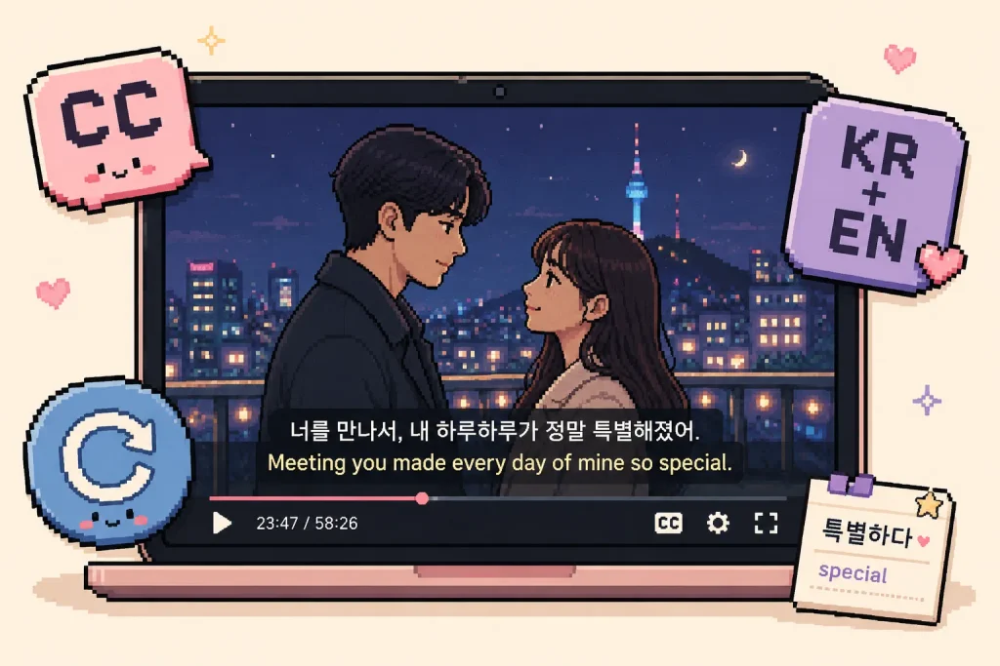
A big content library is useful, but it is not the only thing that matters. For Korean learners, I paid more attention to what happens once you actually start watching.
Korean Subtitles
English subtitles help you follow the story, while Korean subtitles help you connect the sounds you hear with the words on screen.
This becomes especially useful around the intermediate stage, when you may already know the grammar or vocabulary but still miss it in natural speech.
Dual Subtitles
Seeing Korean and English together can make native content easier when you are starting to move away from English-only subtitles.
I would not rely on dual subtitles forever. As your listening improves, spending more time with Korean-only subtitles makes it easier to process Korean without translating every line.
Learning Tools
A normal streaming platform is designed to keep you watching. A language-learning platform can also help you do something with the Korean you notice.
Useful features include clicking unfamiliar words, saving vocabulary, reviewing expressions later, adjusting playback speed, and replaying short sections.
Korean Content
Learning tools only matter when there is something you genuinely want to watch.
Netflix, Viki, KOCOWA, and other entertainment-first platforms still deserve a place on this list because enjoying the content makes it much easier to build a consistent listening habit.
Learner Level
Beginners usually benefit from translation support and vocabulary tools. Intermediate learners can make much better use of Korean subtitles and repeated listening, while advanced learners may care more about access to native Korean content than built-in study features.
1. Lingopie — Best Overall for Active Korean Learning
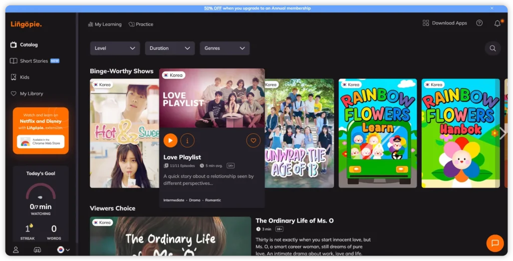
Lingopie is the strongest option on this list for learners who want watching Korean to feel like an actual study activity.
Unlike Netflix or Viki, Lingopie is designed around language learning. You can watch Korean content, click words you do not know, save useful vocabulary, and review those words later.
The basic workflow is simple:
watch → notice → click → save → review
That removes one of the most annoying parts of studying Korean through native content: constantly switching between the video, a dictionary, and whatever app you use for vocabulary.
Why Lingopie Works Well for Korean Learners
When I use normal Korean content for listening practice, the difficult part is often everything happening around the video. I hear an expression I want to understand, pause the scene, try to type what I heard, open a dictionary, and suddenly I am no longer really watching.
Lingopie reduces some of that friction. You can check an unfamiliar expression, save something useful, and continue watching without turning every episode into a full study session.
That makes it especially useful for learners who want more Korean input but do not want every drama episode to feel like homework.
You Can Also Use Lingopie With Netflix
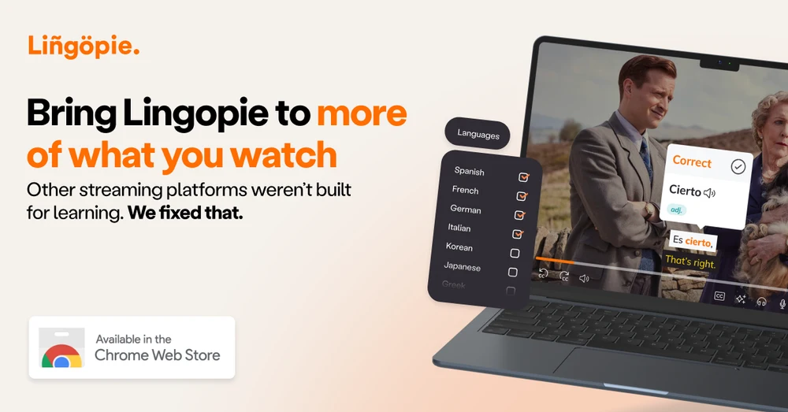
Lingopie launched a Chrome extension in 2026 that works with Netflix.
While watching Korean content on Netflix, you can click Korean subtitle words, get an instant translation, and save useful vocabulary to your Lingopie word list without leaving Netflix.
You still need your own Netflix subscription. The extension adds Lingopie’s learning tools on top of the Netflix content you already watch, which makes it useful for learners who like Netflix’s catalog but want more language support.
🎬 What to Watch on Lingopie
For Lingopie, I would prioritize short episodes and everyday conversations. They fit the click-save-review workflow better than something packed with historical, legal, or crime vocabulary.
🌱 Easier: Unwrap the Age of 13
The language is relatively simple and direct, with school vocabulary and informal speech. It is a good starting point when full-length K-dramas still feel overwhelming.
🌿 Intermediate: Love Playlist
Short episodes, university life, dating, friendships, and casual Korean make this a very practical choice for learners. The conversations are also easier to replay than scenes from a one-hour drama.
🌿 Intermediate: Summer Love
A lighter option for picking up relationship vocabulary, emotional expressions, and natural intonation without following an overly complicated plot.
Who Lingopie Is Best For
Lingopie makes the most sense for:
- beginners who still need translation support
- intermediate learners moving toward Korean subtitles
- learners who prefer dramas and TV to textbook-style lessons
- people who want to save vocabulary while watching
- anyone who frequently pauses videos to look up words manually
Its main value is convenience. It gives you more structure without turning entertainment into another formal lesson.
The Main Downside
Lingopie is another paid language-learning subscription, so it may be unnecessary when you already have Netflix, YouTube, and a listening routine that works well.
You are mainly paying for the integrated learning experience rather than the largest possible Korean entertainment catalog.
Best for: Learners who want streaming and language study in the same workflow.
2. Netflix — Best for Korean Learning With a Platform You Already Use
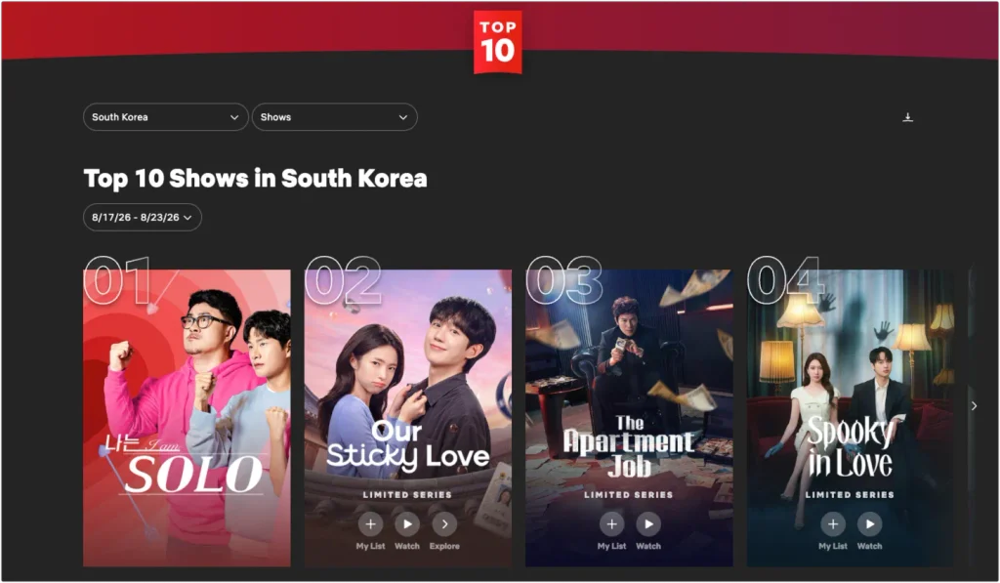
Netflix is the easiest choice for learners who already have a subscription and regularly watch Korean shows.
You do not need to build a completely new study habit. Instead, you can take something you already enjoy and make part of that viewing time more active.
Netflix has Korean dramas, reality shows, films, and other Korean-language content. Its audio and subtitle options vary by title and region.
Why Netflix Is Useful for Learning Korean
Netflix’s biggest advantage is not a special learning feature. It is volume and convenience.
When you already open Netflix several times a week, it is easy to make Korean part of your routine. Dramas are useful for following longer conversations, reality shows expose you to more spontaneous speech, and familiar series work particularly well for repeated listening.
Enjoyment matters too. A show you genuinely want to finish is usually easier to stick with than learner content you feel like you should be watching.
Where Netflix Falls Short
Netflix is a streaming platform first, so it does not give you a native vocabulary notebook, flashcard system, or built-in language-learning workflow.
Subtitle availability also varies, and passive watching is extremely easy. You can finish several episodes with English subtitles and realize that you followed the plot perfectly while barely paying attention to the Korean.
That is still entertainment, but it is not always useful listening practice.
How I Would Use Netflix to Study Korean
Step 1: Watch normally. Follow the scene without pausing every sentence.
Step 2: Replay a short scene with Korean subtitles. One or two minutes is enough. Focus on what you can actually hear.
Step 3: Check only important words. Look up expressions that block your understanding or keep appearing.
Step 4: Watch it again. Replay the same scene without relying on English subtitles and notice how much more you hear the second or third time.
This is much more manageable than trying to study an entire one-hour episode. My guide on how to improve Korean listening goes deeper into dictation, repeated listening, and working with natural-speed Korean.
🎬 What to Watch on Netflix
Netflix has so much Korean content that choosing the right show matters more than simply finding something to watch.
🌿 Intermediate: Hometown Cha-Cha-Cha
A good choice for everyday Korean because much of the story revolves around neighbors, work, food, relationships, and ordinary daily problems. You also hear speakers of different ages rather than only young Seoul characters.
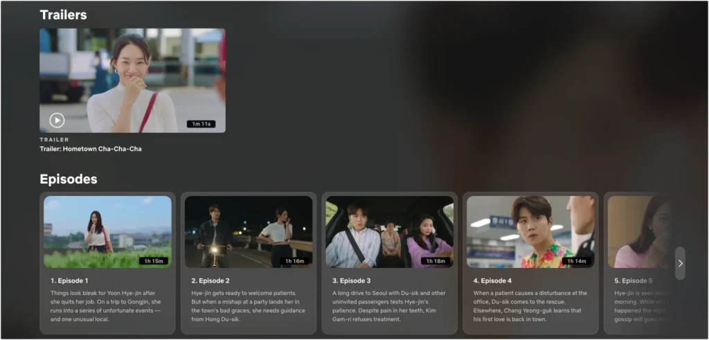
🌱 Easier: Business Proposal
The dialogue is modern and fairly clear, with a useful mix of workplace Korean, polite speech, dating vocabulary, and casual conversations between friends.
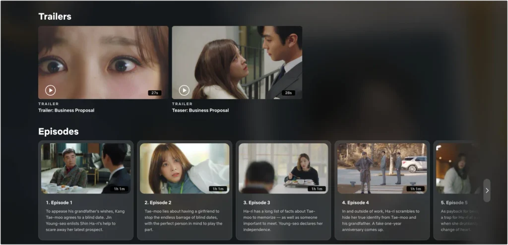
🔥 Challenge: Single’s Inferno
Reality TV gives you less scripted Korean. You hear hesitation, reactions, repeated questions, flirting, and conversational fillers that are easy to miss in textbook listening.
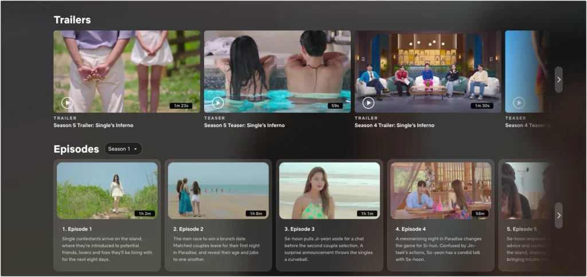
I would start with a drama for stronger context, then add reality content once you want more spontaneous speech.
My list of the best K-dramas to learn Korean has more shows chosen specifically for language learners.
Add a Learning Extension for More Support
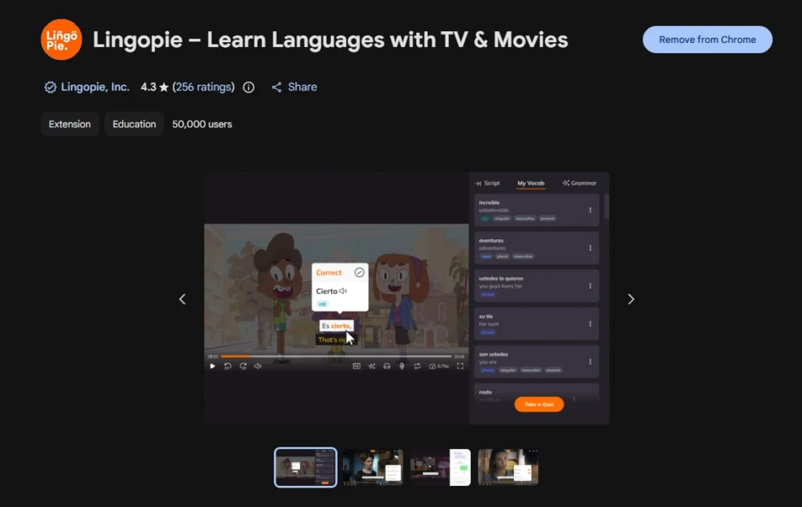
Netflix becomes much easier to study with when you add clickable subtitles or vocabulary tools.
Lingopie’s Chrome extension is one option for learners who want to keep Netflix’s catalog while adding a more language-learning-focused layer on top.
Best for: Learners who already watch Korean shows and want to turn that habit into regular listening practice.
3. Viki — Best for K-Drama Fans
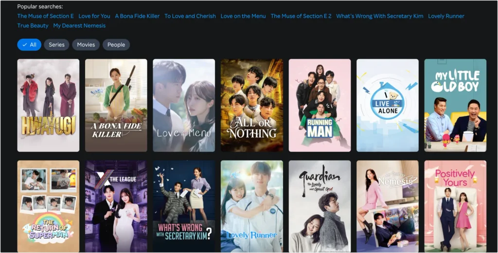
Viki is a strong choice for Korean learners whose main motivation is watching K-dramas and Asian shows.
Its biggest strength is its content selection rather than a dedicated learning system. Subtitle options vary by title, so Korean captions are not guaranteed for every show.
For study, I would use Viki much like Netflix: enjoy the episode first, then return to a short conversation for focused listening. When Korean subtitles are available, listen to the scene before reading them and then compare what you heard with the text.
A few minutes of focused listening inside a show you already like is enough. You do not need to turn the entire episode into homework.
🎬 What to Watch on Viki
Modern school, relationship, and workplace dramas tend to work particularly well because they repeat vocabulary you are more likely to encounter again.
🌱 Easier: True Beauty
School, friendships, family, dating, and appearance-related vocabulary come up constantly. Familiar situations also make it easier to guess meaning from context.
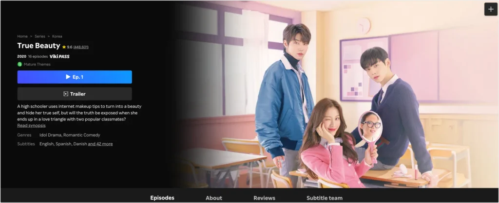
🌿 Intermediate: Fight for My Way
The conversations between longtime friends are especially useful. You hear plenty of casual Korean, teasing, arguments, work problems, and relationship talk.
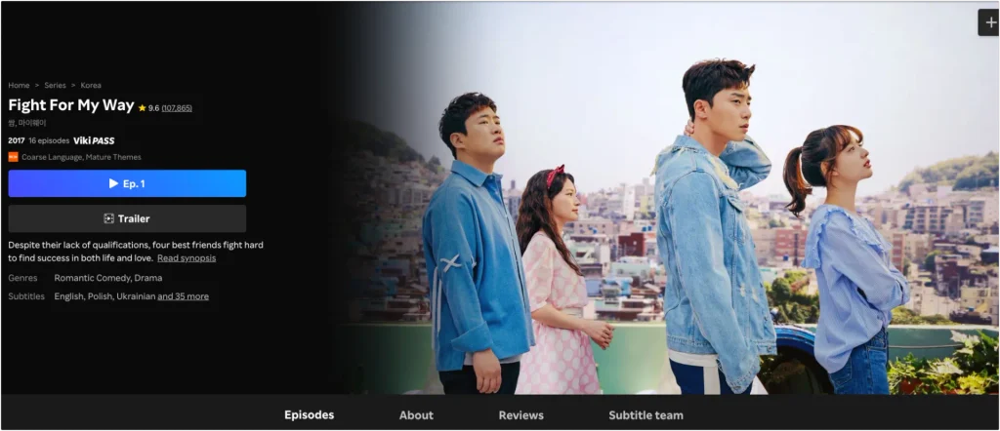
🌿 Intermediate: What’s Wrong With Secretary Kim
A useful mix of workplace language, polite speech, dating vocabulary, and more casual conversations outside the office.
For language learning, I would choose modern everyday settings before historical, medical, or legal dramas. The vocabulary is much easier to reuse.
Does Viki Still Have Learn Mode?
No. Viki discontinued Learn Mode on July 31, 2023.
Older Korean-learning guides may still recommend the feature, but that information is outdated. Viki confirmed the change in its official Learn Mode announcement.
Learn Mode previously added language-learning support to selected videos. Today’s Viki is better viewed as a K-drama platform that you can build your own study routine around.
Best for: Intermediate learners who watch a lot of K-dramas.
4. KOCOWA — Best for Korean Variety Shows
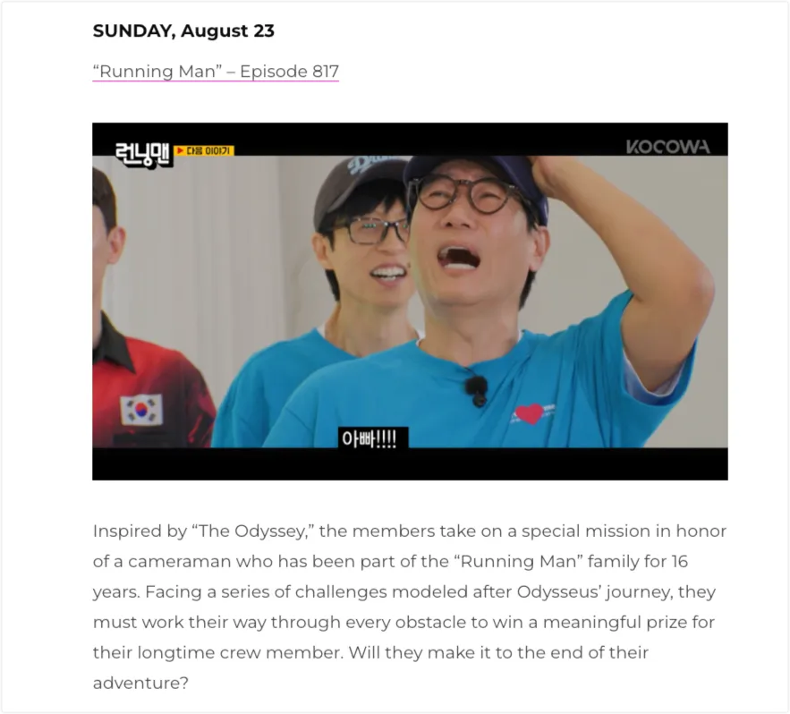
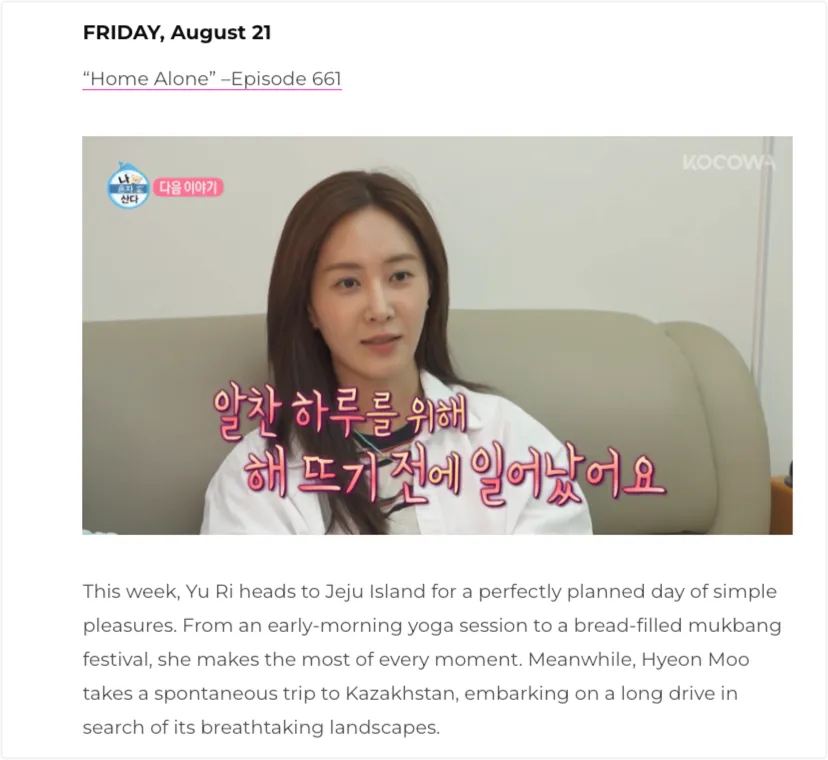
KOCOWA is one of the most useful platforms for learners interested in Korean variety shows, reality programs, and broadcaster content.
Its catalog focuses entirely on Korean entertainment, including programming from major broadcasters such as KBS, MBC, and SBS.
The variety-show side is especially interesting for language learners because it exposes you to a style of Korean that feels much less controlled than textbook audio.
Why Variety Shows Are Useful for Korean Learners
Drama dialogue is scripted. Variety shows give you more spontaneous speech, including interruptions, filler words, unfinished sentences, casual reactions, changes in speaking speed, and repeated everyday expressions.
That makes them harder, but it also makes them useful once carefully recorded learner audio starts feeling too clean.
My guide to the best Korean variety shows to learn Korean has more recommendations arranged around this kind of listening practice.
🎬 What to Watch on KOCOWA
🌱 Easier: Home Alone (I Live Alone)
This is one of my favorite variety-show recommendations for learners. Episodes follow celebrities through ordinary routines, so you hear Korean around cooking, cleaning, eating, shopping, hobbies, friends, and home life.
🌿 Intermediate: The Manager
Useful for everyday conversations mixed with entertainment and workplace situations. Interactions between celebrities, managers, staff, and friends also expose you to different levels of politeness.
🔥 Challenge: Running Man
Great once you want to train fast listening. People interrupt each other, shout, joke, react quickly, and use casual expressions constantly.
Running Man can feel chaotic at first, so I would not make it your first Korean variety show. Home Alone is a much gentler entry point.
What Subtitles Does KOCOWA Have?
KOCOWA provides English subtitles for its Korean content, and some titles also offer other translated subtitle languages depending on the program and region.
Korean subtitles are not listed as a standard option, so KOCOWA works better for access to Korean entertainment and listening practice than subtitle-heavy study.
It becomes more useful once you can tolerate missing parts of a conversation and want to train your ears with faster, less controlled Korean.
Availability is also region-dependent, so check whether KOCOWA operates in your country before subscribing.
Best for: Intermediate to advanced learners who want Korean variety and entertainment shows.
5. OnDemandKorea — Best for Korean Language Immersion
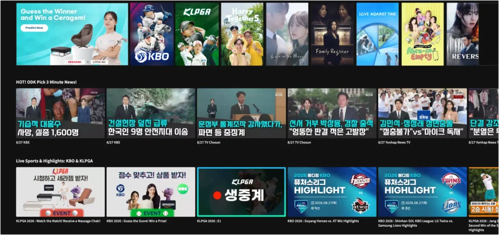
OnDemandKorea is a good option for intermediate and advanced learners who want a more Korean-first viewing environment.
Selected content can be browsed by subtitle language, including Korean. This becomes useful once you want to listen and read Korean at the same time without relying heavily on English.
Who Should Use OnDemandKorea?
OnDemandKorea becomes more useful when you can already follow the general topic of a scene, recognize familiar grammar by ear, use Korean subtitles without translating every sentence, and continue watching even when you miss some words.
Complete beginners may prefer a more structured platform, but intermediate learners can benefit from an environment that gives them less hand-holding. At that stage, you spend more time processing Korean as Korean instead of constantly converting everything into English.
🎬 What to Watch on OnDemandKorea
🌿 Intermediate: Let’s Eat (식샤를 합시다)
Food is a huge part of the show, which means plenty of practical vocabulary around meals, restaurants, ordering, taste, and everyday life. The visual context also makes unfamiliar words easier to understand.
🌿 Intermediate: Drinking Solo (혼술남녀)
Useful for workplace conversations, social situations, relationships, and casual speech. You hear both polite Korean and more relaxed Korean between friends.
🌿 Intermediate: Emergency Couple (응급남녀)
There is some medical vocabulary, but the relationship and workplace conversations still provide useful listening practice.
I would use OnDemandKorea differently from Lingopie. Instead of stopping to study every line, turn on Korean subtitles and see how long you can follow the story without translating.
The Main Limitation
Availability and catalogs vary by location.
Check what content and subtitle options are accessible in your region before subscribing specifically for Korean study.
Best for: Intermediate to advanced learners moving toward Korean-first immersion.
6. YouTube — Best Free Korean Streaming Option
YouTube is the best free option for learning Korean through video.
You can find broadcaster clips, interviews, variety-show highlights, vlogs, cooking videos, street interviews, learner-friendly channels, and short clips that are easy to replay several times.
That makes YouTube particularly useful for short listening sessions. A three-minute clip is much easier to repeat than a 60-minute drama episode.
🎬 What to Watch on YouTube
YouTube works best when you stop treating it like an endless recommendation feed and choose a few repeatable sources.
🌱 Easier: KBS WORLD TV clips
Short drama and entertainment clips are easier to replay than complete episodes, while the visual context usually helps you follow what is happening.
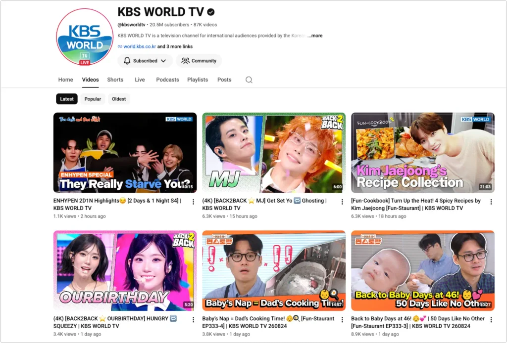
🌿 Intermediate: Korean vlogs
Daily routines naturally repeat vocabulary around food, shopping, work, travel, exercise, and home life.
🔥 Challenge: Variety-show and interview clips
These are excellent for reactions, filler words, interruptions, and natural speaking speed. A two-minute interview can give you more focused listening practice than an hour of passive viewing.
I would rather follow one speaker for a week than watch ten unrelated videos. Once you become familiar with someone’s voice and speaking habits, listening usually becomes noticeably easier.
My guide to the best YouTube channels to learn Korean has more structured options for listening, vocabulary, and everyday Korean.
Are YouTube Korean Captions Accurate?
Sometimes.
YouTube supports automatic Korean captions, but speech recognition can still struggle with fast speech, overlapping voices, background noise, and unclear pronunciation.
For Korean study, I would use captions in this order:
| Caption Type | ✅ Best Use |
|---|---|
| Creator-added Korean captions | Best for focused study |
| Reviewed captions | Usually reliable for listening practice |
| Automatic Korean captions | Useful as support, but check suspicious words |
A strange caption does not automatically mean your listening was wrong. Automatic captions can be wrong too.
How I Use YouTube for Korean
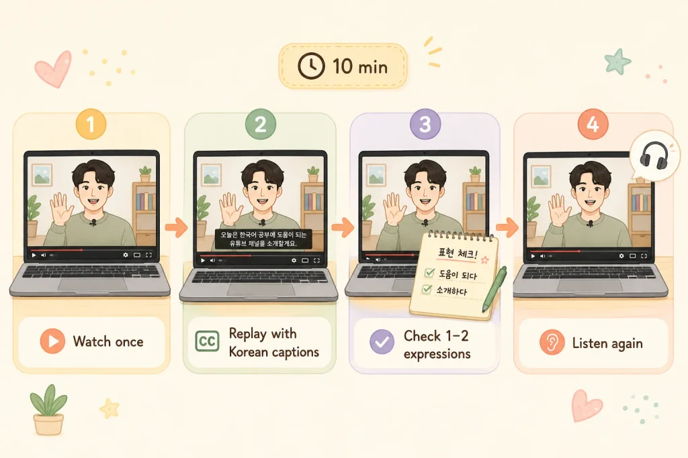
Staying with one channel, speaker, or series for a while makes listening easier because you become familiar with the speaker’s voice and keep hearing similar vocabulary.
A simple session can look like this:
watch once → replay with Korean captions → check one or two expressions → listen again
Ten focused minutes can be much more useful than an hour of random Korean videos playing in the background.
Best for: All levels, especially learners who want free and flexible listening practice.
Which Streaming Service Is Best for Learning Korean?
The best platform depends on your level and how actively you want to study.
| Your Goal | 🏆 Best Choice | Why |
|---|---|---|
| 🧠 Built-in language-learning tools | Lingopie | Dual subtitles, vocabulary tools, and review features |
| 🎬 A large Korean catalog you may already pay for | Netflix | Easy to turn an existing K-drama habit into listening practice |
| 💕 Lots of K-dramas | Viki | Strong Korean and Asian drama selection |
| 😂 Korean variety and reality shows | KOCOWA | Strong broadcaster and entertainment catalog |
| 🇰🇷 More Korean-first immersion | OnDemandKorea | Korean subtitle options on selected content |
| 🆓 Free Korean streaming | YouTube | Huge range of free Korean video content |
Beginners who want more support while watching will probably get the most value from Lingopie. Netflix is the easiest starting point for learners who already have a subscription and mainly need a better study routine.
Viki and KOCOWA become more useful as your listening improves, while OnDemandKorea makes more sense when you are ready to rely less on English.
What Should You Watch at Each Korean Level?
The platform matters, but the type of content matters too.
| Level | 📺 Good Starting Point | Why |
|---|---|---|
| 🌱 Beginner | Short Lingopie shows, Business Proposal, short YouTube clips | More context and easier replay |
| 🌿 Intermediate | Hometown Cha-Cha-Cha, True Beauty, Home Alone, Korean vlogs | More natural everyday Korean |
| 🔥 Advanced | Running Man, reality shows, interviews, Korean-first content | Faster and less scripted speech |
You do not need to wait until you are “advanced enough” to watch native content. The trick is choosing something that gives you enough context to stay engaged even when you miss words.
How to Actually Learn Korean While Streaming
The platform helps, but how you watch matters more.
You do not need to pause every ten seconds or turn an entire episode into homework. A few small changes make streaming much more useful.
| Instead of… | ✅ Do This |
|---|---|
| Looking up every unknown word | Check words that block meaning or keep repeating |
| Studying an entire episode | Rewatch one short scene |
| Always using English subtitles | Gradually move toward Korean subtitles |
| Saving huge vocabulary lists | Save expressions you actually hear repeatedly |
| Watching only dramas | Mix dramas, variety shows, interviews, and short clips |
Don’t Look Up Every Word
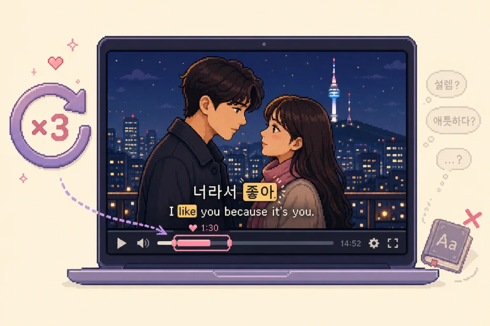
Pausing for every unfamiliar word quickly turns listening practice into dictionary practice.
Let some words go and focus on the expressions that block your understanding or keep appearing across different scenes.
Rewatch Short Scenes
You do not need to replay an entire episode. One or two minutes is enough.
The first time, follow the meaning. The second time, listen more closely to the Korean. On the third pass, notice what you can understand without help.
This kind of repeated Korean listening practice is especially useful when familiar grammar still disappears at natural speed.
Move Toward Korean Subtitles
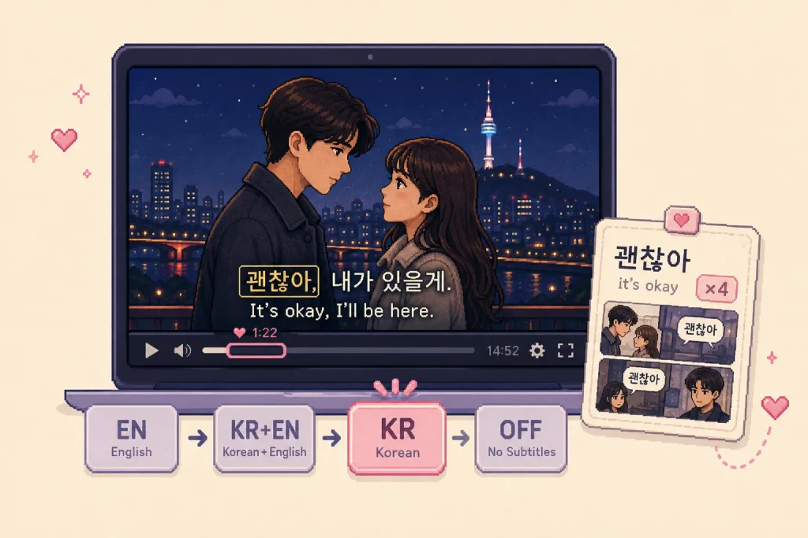
English subtitles are useful, especially at the beginning, but your reliance on them can gradually decrease as your Korean improves.
A useful progression is:
English subtitles → Korean + English → Korean subtitles → no subtitles
There is no deadline for moving through these stages. Use the least amount of support that still lets you follow what is happening.
Save Expressions You Actually Hear Again
I would rather learn ten expressions that keep appearing in Korean shows than collect 100 random words from one episode.
Repeated expressions are usually worth your attention because you are more likely to hear them again. Save them, notice how they change across different situations, and listen for them the next time you watch.
Use Different Content for Different Listening Skills
Different types of Korean content train different parts of your listening.
| Content | 🎧 What It Helps With |
|---|---|
| K-dramas | Following longer conversations through context |
| Variety shows | Fast, spontaneous, casual Korean |
| Reality shows | Everyday reactions and conversational speech |
| YouTube interviews | Short, focused listening |
| Vlogs | Everyday vocabulary and repeated topics |
Best Streaming Services to Learn Korean FAQs
What Is the Best Streaming Service for Learning Korean?
Lingopie is the best overall option for active Korean study because it combines streaming with language-learning tools such as dual subtitles, clickable vocabulary, and review features.
Netflix is a better fit for learners who already have a subscription and mainly want more Korean listening exposure.
Can You Learn Korean by Watching K-Dramas?
Yes. K-dramas can improve listening, vocabulary recognition, and familiarity with common Korean expressions.
They work best as a source of input alongside grammar, vocabulary, reading, or speaking practice. Replaying short scenes and gradually using more Korean subtitles is more useful than simply watching everything with English subtitles.
The best K-dramas to learn Korean includes more shows that work well for listening practice.
Is Lingopie Better Than Netflix for Learning Korean?
Lingopie has stronger built-in learning tools, while Netflix has a much larger mainstream entertainment catalog.
Lingopie is better for clickable subtitles, vocabulary support, and structured study. Netflix makes more sense when Korean shows are already part of your normal viewing routine.
Is Netflix Good for Korean Beginners?
Netflix can work for beginners, although native Korean dramas are often fast.
Start with short scenes and shows with familiar everyday settings. Extra subtitle or vocabulary support can also make the transition into native content much less frustrating.
Does Viki Still Have Learn Mode?
No. Viki discontinued Learn Mode on July 31, 2023.
Older guides that recommend Viki Learn Mode are using outdated information.
Which Streaming Services Have Korean Subtitles?
Subtitle availability varies by platform and title.
Lingopie is built around native-language subtitles for learners. Netflix offers Korean subtitles on many titles, although availability varies. Viki subtitle options depend on the individual title, while OnDemandKorea offers Korean subtitle options on selected content.
KOCOWA does not list Korean subtitles as a standard subtitle option.
What Is the Best Free Streaming Option for Learning Korean?
YouTube is the best free option for most Korean learners.
It offers Korean content across almost every topic and supports automatic Korean captions on eligible videos. Creator-added captions are preferable for focused study because automatic captions can contain errors.
What Is the Cheapest Way to Learn Korean Through Streaming?
Start with free Korean content on YouTube.
Choose one Korean channel or series, use Korean captions when available, and replay short clips instead of constantly searching for new videos.
A free setup is enough for regular listening practice. Paid tools become more useful when you want features such as dual subtitles, clickable vocabulary, or built-in review.
Should I Use English or Korean Subtitles?
Use the least support you need to understand the scene.
Beginners may still need English, while intermediate learners can start revisiting familiar scenes with Korean subtitles. Over time, reducing your dependence on English makes it easier to process Korean directly.
Final Thoughts
The best streaming service depends on what you want from your viewing time.
Lingopie is the strongest choice for built-in learning tools, while Netflix works well when K-dramas are already part of your routine. Viki is useful for drama fans, KOCOWA gives you more Korean variety content, and OnDemandKorea becomes more useful as you move toward Korean-first immersion.
For a free option, YouTube is still hard to beat.
Whichever platform you choose, keep the study process simple:
watch → replay → notice → save → listen again
You do not need to understand every word. What matters is getting enough repeated Korean that familiar grammar, sounds, and expressions start becoming easier to recognize automatically.